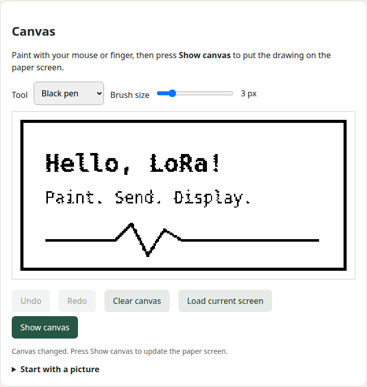

Wireless Paper API
Send LoRa messages from HTTP, read radio replies, and draw on the board’s screen from a browser.
Firmware and Python helpers for Heltec Wireless Paper and Wireless Tracker V1.1. Text, drawing operations, and full bitmaps share one display interface. A setup hotspot makes the controls reachable after startup, even when the saved Wi-Fi network is unavailable.
A canvas you can send to the screen
Draw with a mouse or finger. Choose a pen or eraser, change the brush size, undo a stroke, or import a picture. Press Show canvas when you want the paper screen to change. The browser fits and converts pictures to the panel's 250 × 122 black-and-white pixels.

Text controls also expose font scale, position, wrapping, ink, and background. White text on a black background works. Shapes and text operations can override their own settings.
Reach the controls after a restart
First-hour setup
The boot screen shows the hotspot name and http://192.168.4.1/. The default setup window lasts 60 minutes. Connected clients keep the hotspot open afterward until the last client disconnects.
A saved always-on choice
Keep the hotspot on permanently from the web UI if that suits the installation. The setting survives restarts. Station Wi-Fi continues when the default hotspot window ends.
The public source contains no personal network settings. It builds without credentials and starts its setup hotspot. Supply your own station network through an ignored local configuration file before rebuilding.
Use HTTP from your own code
curl http://BOARD/api/display \
-H 'Content-Type: application/json' \
-d '{"text":"Build passed","size":2,"x":8,"y":8,
"color":"white","background":"black"}'The web UI and API use port 80. A write returns a job ID; the status endpoint reports when the panel refresh has finished. Full frames can be uploaded and read back. The same display payloads can be split into checked LoRa fragments using the Python helpers.
Use the board as a radio adapter
Configure the raw LoRa modem, send text or hex packets, and read a rolling log of sent and received messages over HTTP. The log includes signal measurements for received packets. Radio settings persist across restarts, and transmit is disabled by default. Individual send requests can override modem settings temporarily, then restore the configured receiver. The open LoRa section refreshes the packet log automatically.
The Python client can also send a display command through one adapter board to another compatible receiver. This uses a custom raw LoRa protocol, not Meshtastic or LoRaWAN. One transceiver cannot receive while transmitting. A local send result does not prove remote delivery.
Know the limits
- Paper uses a 250 × 122 e-paper panel; Tracker uses its 160 × 80 TFT. Both builds expose the same monochrome API. Smooth video, full TFT color, and GNSS are outside this firmware’s scope.
- The hotspot and API are deliberately open and unencrypted. Nearby clients can change the screen and settings. Keep the device on trusted networks and do not expose it to the internet.
- Wi-Fi credentials belong in an ignored local file. Private builds and flash dumps may contain them and must not be shared.
- Match your purchased radio band and antenna. The configurable pacing guard is not a guarantee of compliance with radio rules.
- Real two-board tests confirmed exact messages in both directions, binary payloads, a 255-byte packet, and temporary modem profiles with receiver restoration. See the validation record. Field range and battery current have not been measured.
Interactive installation uses ./install.sh to choose a board, port, and private Wi-Fi settings, then build, back up, and upload. Manual installation uses PlatformIO. No Debian package, cloud service, account, or public Wi-Fi credentials are included.
License and disclaimer
Provided as is, without warranty of any kind. You accept all risk from installation and use, including damage, data loss, disclosure, and unintended radio operation. See the MIT license.
A personal open-source project by Ramazan Yavuz. Independent of Heltec, Espressif, and other hardware vendors.